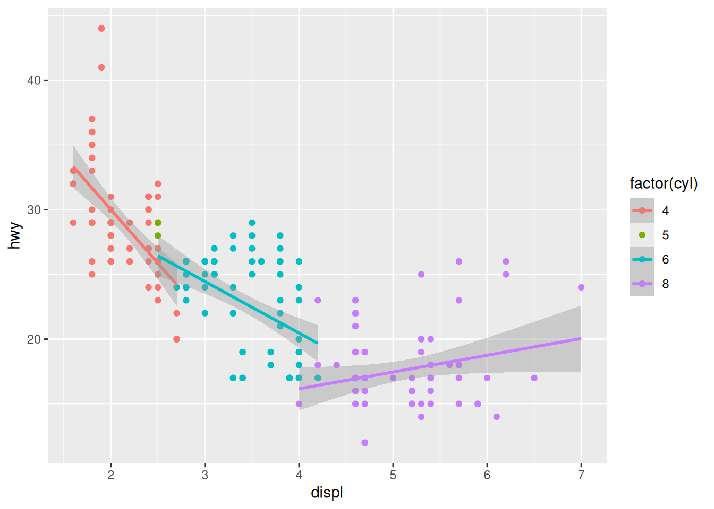

Thanks for taking the time to read my first blog post! While I am trained as a social psychologist, I’m a big proponent of leveraging data science tools to understand the world around us. Thus, I plan to discuss a mixture of data-driven topics and insights here. I hope to use this blog as a place to write about things that interest me, but focus will likely be on statistics, research methods, open science, social psychology, and data science. This will be a place for me to share my thoughts on a variety of topics, offer guidance on statistical/methodological topics for the social sciences, and hopefully generate a bit of discussion.
To tell you a little more about myself, I am currently a fourth year PhD student in applied social psychology and received my MA in applied social psychology from Loyola University Chicago in 2016. My research interests are related to group dynamics, cooperation/conflict, social influence, and quantitative methods. I started conducting my data analysis in R about a year ago, and have been interested in the power of open source data science tools ever since. I believe one way to improve our current scientific system is to create and use good open source tools, and we also need to make these tools easy enough for all scientists to use. In other words, we need to make science more accessible.
I’ll stop myself before I stand too tall on my open-science soapbox (I’ll save that for another post). For the remainder of this post, I want to take some time to explain where the header image on my homepage comes from. Since I’m also a former automotive mechanic, I thought I would pay a bit of homage to my former trade. If you are at all familiar with R (or RStudio), there’s a good chance you’re familiar with the mpg dataset. If you’re not familiar with this dataset, the data are a subset of the fuel economy data the EPA makes available here. It contains only models which had a new release every year between 1999 and 2008, and this was used as a proxy for the popularity of the car. The mpg dataset is part of the ggplot2 package in R, and I used it to create the image of the graph on my homepage.
The data
First, let’s take a look at the structure of the data:
Among other things, this tells us there are a 234 observations of 11 different variables. Most of these variables are fairly intuitive by their names, but for our purposes, I will only focus on three of them: displ, hwy, cyl. These are the cars’ engine displacement (in litres), highway miles per gallon, and number of cylinders.
Creating the graph
Here is the code to create the graph using the ggplot2 package:
Code
library(ggplot2)ggplot(mpg, aes(displ, hwy)) +geom_point(aes(col =factor(cyl))) +geom_smooth(method = lm, aes(col =factor(cyl)))## `geom_smooth()` using formula = 'y ~ x'

And, that’s all there is to it! While it may seem pretty straightforward, this actually took me a few days to create when I first started coding in R. Indeed, one’s first ggplot seems like quiet the achievement in the moment!
If you’re scratching your head after reading this post, don’t worry! I plan to blog about plenty of neat things one can do in R (and in much more detail), so stay tuned!
Citation
BibTeX citation:
@online{2018,
author = {},
title = {First Post!},
date = {2018-02-07},
url = {https://www.jrwinget.com/blog/2018-02-07-first-post/},
langid = {en}
}